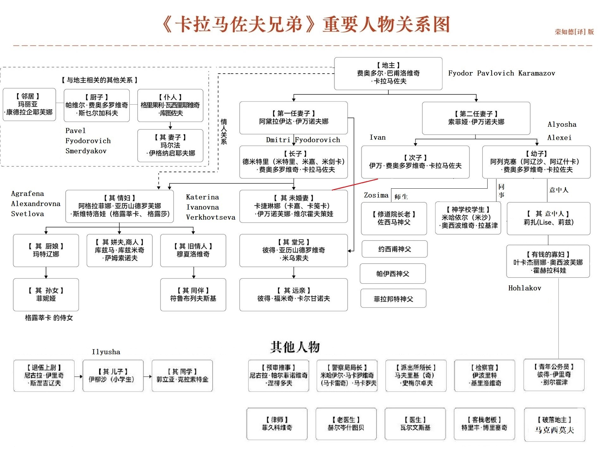

卡拉马佐夫兄弟
The Brothers Karamazov
陀思妥耶夫斯基
耿济之 译
bk
en
0
第一部
第一卷 一个家庭的历史
1.1.1 第01节 费多尔·巴夫洛维奇·卡拉马佐夫 1
1.1.2 第02节 被扔在一边的长子 2
1.1.3 第03节 续弦和续弦生的子女 3
1.1.4 第04节 幼子阿辽沙
4
1.1.5 第05节 长老们 5
第二卷 不该举行的聚会
1.2.1 第01节 来到修道院
6
1.2.2 第02节 老丑角
7
1.2.3 第03节 有信仰的村妇们
8
1.2.4 第04节 信念不坚的太太
9
1.2.5 第05节 将来一定会这样，一定会这样！
10
1.2.6 第06节 这样的人活著有什么用！
11
1.2.7 第07节 向上爬的宗教学校学生
12
1.2.8 第08节 乱子
13
第三卷 酒色之徒
1.3.1 第01节 下房
14
1.3.2 第02节 丽萨维塔·斯麦尔佳莎娅
15
1.3.3 第03节 热心的忏悔(诗体)
16
1.3.4 第04节 热心的忏悔(故事)
17
1.3.5 第05节 热心的忏悔(“脚跟朝上”)
18
1.3.6 第06节 斯麦尔佳科夫
19
1.3.7 第07节 争论的问题
20
1.3.8 第08节 喝着白兰地的时候
21
1.3.9 第09节 色鬼
22
1.3.10 第10节 两人在一起
23
1.3.11 第11节 又一个失去了的名誉
24
第二部
第四卷 咄咄怪事
2.4.1 第01节 费拉庞特神父
25
2.4.2 第02节 在父亲家里
26
2.4.3 第03节 和小学生们相第遇
27
2.4.4 第04节 在霍赫拉柯娃家
28
2.4.5 第05节 客厅里的折磨
29
2.4.6 第06节 农舍里的折磨
30
2.4.7 第07节 在清新空气里
31
第五卷 正与反
2.5.1 第01节 婚约
32
2.5.2 第02节 斯麦尔佳科夫弹吉他
33
2.5.3 第03节 兄弟俩互相了解
34
2.5.4 第04节 叛逆
35
ref
2.5.5 第05节 宗教大法官
36
ref
2.5.6 第06节 暂时还很不清楚的一章
37
2.5.7 第07节 “跟聪明人谈谈也是有好处的”
38
第六卷 俄罗斯修士
2.6.1 第01节 佐西马长老和他的客人
39
2.6.2 第02节 已故司祭佐西马长老的生平，阿历克赛·费
40
2.6.3 第03节 佐西马长老的谈话和训言
41
第三部
第七卷 阿廖沙
3.7.1 第01节 腐臭的气味
42
3.7.2 第02节 那样的时刻
43
3.7.3 第03节 一棵葱
44
3.7.4 第04节 加利利的迦拿
45
第八卷 米嘉
3.8.1 第01节 库兹马·萨姆索诺夫
46
3.8.2 第02节 猎狗
47
3.8.3 第03节 金矿
48
3.8.4 第04节 在黑暗里
49
3.8.5 第05节 突然的决定
50
3.8.6 第06节 我也来了！
51
3.8.7 第07节 无可争议的旧情人
52
3.8.8 第08节 梦呓
53
第九卷 预审
3.9.1 第01节 彼尔霍金官运的开端
54
3.9.2 第02节 报警
55
3.9.3 第03节 灵魂的苦痛 第一次磨难
56
3.9.4 第04节 第二次磨难
57
3.9.5 第05节 第三次磨难
58
3.9.6 第06节 检察官捉住了米卡
59
3.9.7 第07节 米卡的重大秘密
60
3.9.8 第08节 证人的供词 - 婴孩
61
3.9.9 第09节 米卡被带走了
62
第四部
第十卷 大男孩和小男孩
4.10.1 第01节 柯里亚·克拉索特金
63
4.10.2 第02节 小孩子
64
4.10.3 第03节 小学生
65
4.10.4 第04节 茹奇卡
66
4.10.5 第05节 在伊留莎床边
67
4.10.6 第06节 早熟
68
4.10.7 第07节 伊留莎
69
第十一卷 伊凡
4.11.1 第01节 在格鲁申卡家里
70
4.11.2 第02节 病足
71
4.11.3 第03节 小魔鬼
72
4.11.4 第04节 赞美诗和秘密
73
4.11.5 第05节 不是你！不是你！
74
4.11.6 第06节 跟斯麦尔佳科夫的第一次晤面
75
4.11.7 第07节 再访斯麦尔佳科夫
76
4.11.8 第08节 跟斯麦尔佳科夫的第三次也是最后一次晤面
77
4.11.9 第09节 魔鬼---伊凡·费多罗维奇的梦魇
78
4.11.10 第10节 “这是他说的！”
79
第十二卷 错案
4.12.1 第01节 致命的一天
80
4.12.2 第02节 危险的证人
81
4.12.3 第03节 医生鉴定和胡桃一磅
82
4.12.4 第04节 幸福对米卡微笑
83
4.12.5 第05节 突如其来的灾难
84
4.12.6 第06节 检察官的演说
85
4.12.7 第07节 历史的观察
86
4.12.8 第08节 对于斯麦尔佳科夫的研究
87
4.12.9 第09节 种种心理分析
88
4.12.10 第10节 律师的演说
89
4.12.11 第11节 既没有钱也没有抢劫的事
90
4.12.12 第12节 也没有谋杀
91
4.12.13 第13节 诲淫诲盗的论客
92
4.12.14 第14节 乡下人不为所动
93
尾声
5.1 第01节 营救米卡的计划
94
5.2 第02节 谎话一时成为真实
95
5.3 第03节 伊留莎的殡葬 石头旁边的演词
96

五个译本原文对比
哪个译本好
徐振亚 冯增义版